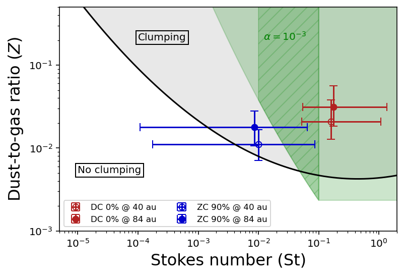

V-SHARDS III: Can planetesimals form in GM Aur's rings?
Viscardi et al., in prep.
Dust grains in protoplanetary disks collide at high relative speeds. As a result, they tend to bounce or break apart rather than stick, and struggle to grow beyond millimeter sizes. This raises a question: how do planetesimals, the kilometer-sized rocky bodies that are the building blocks of planets, form?
The leading explanation is a process called the streaming instability (SI). In regions where dust accumulates, such as dust rings, the aerodynamic interaction between dust and gas can trigger a positive feedback loop: dust clumps slow the gas, which lets more dust drift into the clumps. When the clumps become massive enough, they collapse under their own gravity and form planetesimals. Whether the SI can operate depends on three parameters: the dust-to-gas ratio, the Stokes number (the dust–gas coupling), and the level of turbulence.
After measuring the dust properties of GM Aur's rings in V-SHARDS II, I quantified their gas content and turbulence through a kinematic analysis of the 12CO and 13CO emission. Comparing the results with SI simulations shows that the planet-formation potential of GM Aur depends on its dust composition. For dust mixtures including refractory organics as carbonaceous materials, both rings lie well within the strong clumping regime, even for high turbulence (10−3), while for mixtures with amorphous carbons planetesimal formation is suppressed. These findings highlight the critical role of dust composition in assessing the planet-forming potential of disk rings.